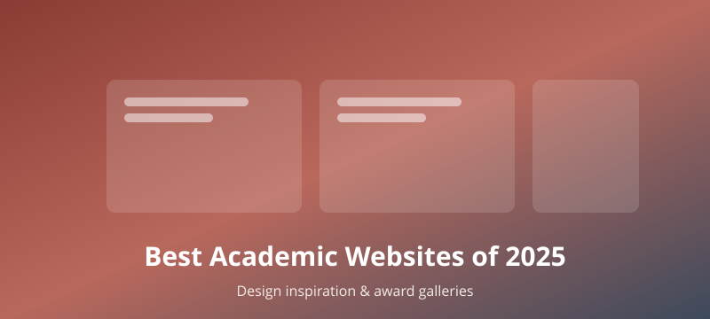

The Best Personal Academic Websites of 2025 — and Where to Find Design Inspiration
June 17, 2026

A strong personal website has quietly become part of an academic's identity — it is where your research, teaching, and personality come together in one place you fully control. If you are about to build or refresh your own site, the fastest way to raise your standards is to study the best examples. Below is a tour of the 2025 winners of the Best Personal Academic Websites Contest, followed by a set of official award galleries you can browse for design inspiration.
The 2025 Best Personal Academic Websites Contest
Now in its third edition, the Best Personal Academic Websites Contest is hosted by Jennifer van Alstyne, Brittany Trinh, and Ian Li. This year the judges named twelve winners across a range of categories — and, notably, awarded every one of them a perfect score. That makes the full winners list an unusually reliable shortlist of sites worth learning from. Here are the winners, grouped by category.
Overall Best (tie)
- Madeline Eppley — a site built around strong storytelling and excellent use of photography. Even with a lot of material, the content never feels cramped; there is room to breathe on every page.
- Dr. Roberta Rosa Valtorta — built on the Owlstown platform, with downloadable syllabi that put her teaching value on full display rather than just describing it.
Owlstown Platform Award
- Dr. Akshata Naik — a site with real personality, anchored by a friendly "Get to know me" button that invites visitors in.
Best Educational Resource
- Dr. Fawad Ahmed Najam — a deep, clearly organized library of structural-engineering videos, articles, and data that genuinely teaches.
Best Academic Portfolio
- Dr. Patrick Manser — opens with a welcome video and backs it with a large amount of content that still manages to stay well-organized and easy to navigate.
Best Lab / Team Website (tie)
- Allie Sinclair Lab (Rice University) — an Owlstown site with a visually unified design that also includes clear recruitment information for prospective members.
- Public Health Resonance Project — uses real fieldwork photos to add warmth and approachability, making the research feel human.
Best Storytelling
- Dr. Erika Cedillo-González — a site that carries the reader through a narrative rather than a list of facts.
Best Interaction
- Dr. Cecilia Baldoni — an interactive homepage with a standout "Shrews" page, all built on GitHub Pages, proving that interactivity does not require an expensive stack.
Best Art / Visual
- Meg Mindlin — a visually striking site where the art direction does real work.
Most Aesthetic
- Hira Javed — a harmonious color palette paired with infographics that make information pleasant to absorb.
Accessible SciComm Award
- Dr. Ana Rebeka Kamšek — a concise, accessible GitHub Pages site that shows how much you can achieve by keeping the content tight.
If you want even more examples, the contest also publishes its earlier editions: the 2023 winners are still online, and a contest tag page collects winners across all years in one place — a great rabbit hole for an afternoon of inspiration.
Other official competitions and award galleries
Beyond the academic contest, the broader web-design world runs several award programs whose galleries are publicly browsable and filterable. These are goldmines of design inspiration, and many let you filter directly to portfolio or personal-site categories.
General web design (most useful)
- Awwwards — daily, monthly, and annual winners. Filter by the "Portfolio" tag to see personal sites; it is the most authoritative award in the industry.
- CSS Design Awards (CSSDA) — features a Site of the Year (2024) and a dedicated Portfolio category.
- The FWA — a showcase of cutting-edge interaction and creative work, ideal when you want to push the boundaries of what a site can do.
- Webby Awards — often called "the Oscars of the Internet," and it includes a Personal / Portfolio category.
University and academic institution sites
- WebAward — recognizes the Best University Websites, useful if you are designing for a lab or department.
- Horizon Interactive Awards — includes a School / University category.
General design awards
- A' Design Award — a broad program with a dedicated Web Design category.
Takeaway
Look across all of these winners and a clear pattern emerges. The best academic sites are not the flashiest — they tell a coherent story, give content room to breathe, make teaching and data tangible (downloadable syllabi, real photos, organized resources), and add just enough personality and interaction to feel like a person rather than a CV. Many of the standouts run on humble stacks like GitHub Pages or Owlstown, which is reassuring: a great personal academic website is far more about clarity, structure, and storytelling than about budget. Pick a couple of winners whose tone matches yours, browse an award gallery or two for visual direction, and then build the simplest site that tells your story well.